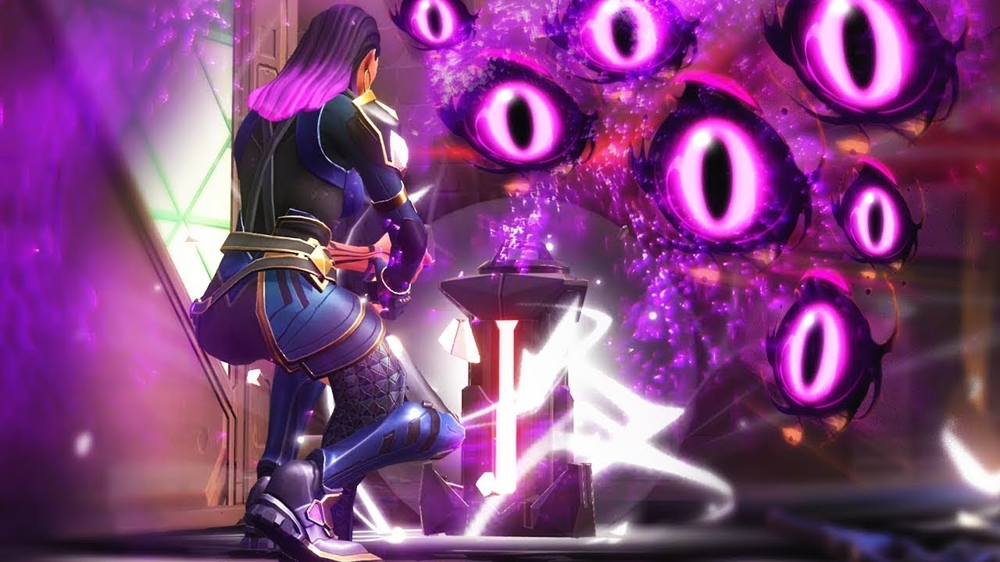

Валорант
Valorant — бесплатный тактический шутер 5 на 5 человек от Riot Games (League of Legends) для ПК. За время бета-тестирования Valorant занял третье место по пиковому количеству зрителей за все время на Twitch. Игру посмотрели 1,7 миллиона человек, это объясняется раздачей ключей к игре на стримах. Также за время закрытого бета-тестирования в игру активно играли около 3 миллионов человек каждый день, а игра получила положительные отзывы от игроков и критиков. Большинство сошлось во мнении, что игра взяла лучшее у CS:GO, Overwatch и Ranbow Six: Siege. Шутер вышел 2 июня 2020 года во всех регионах мира.